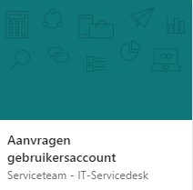
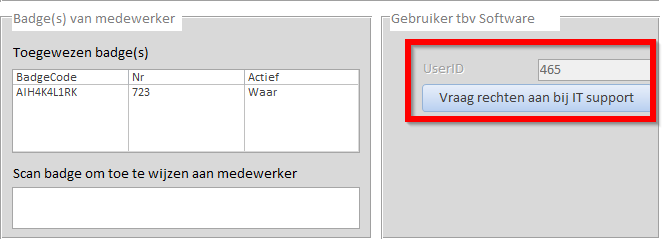
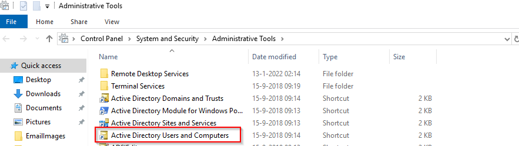
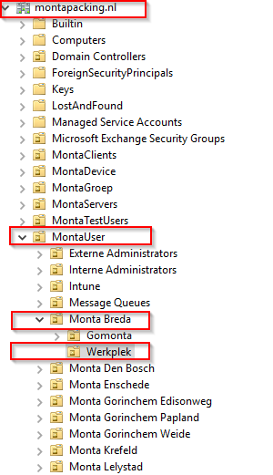
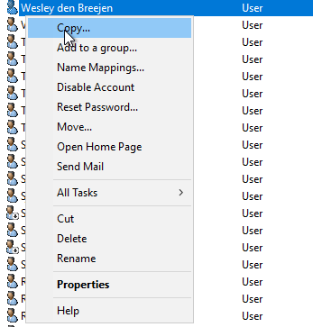
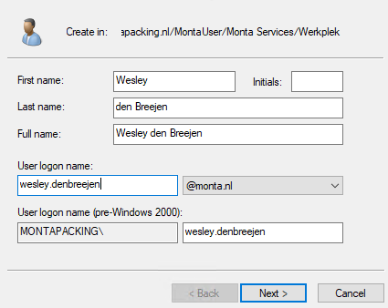
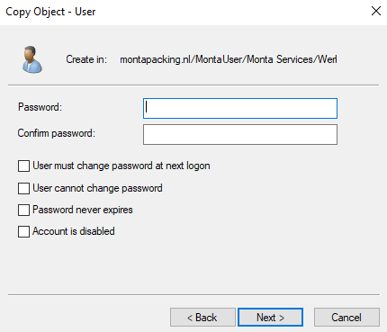
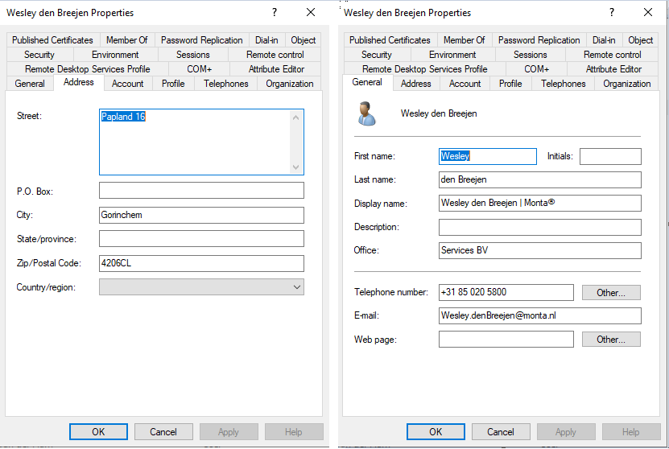

Aanmaken nieuwe gebruiker (werkplek)
Algemeen
Voor elke nieuwe gebruiker in ons systeem moet onderstaande handleiding stap voor stap gevolgd worden.
Controleren of onderstaande stappen zijn uitgevoerd
HR vult een aanvraagformulier in via Microsoft Forms. Deze aanvraag komt in Freshservice terecht onder de niet toegewezen tickets. De aanvraag kan vervolgens bekeken worden via de volgende link https://www.office.com/launch/forms?auth=2
Mocht je de onderstaande tegel niet zien vraag dan rechten aan bij de Servicedesk.

Maak alleen een nieuwe gebruiker aan als de gebruiker is aangemaakt in Montamoney en een UserID heeft. Mocht de gebruiker nog niet in Montamoney staan vraag dan aan de leidinggevende dit eerst te doen.

Gebruiker aanmaken
Login op de MP-MGMT12 en ga naar Windows Administrative Tools. Open hier 'Active Directory Users and Computers'. 
Zoek onder het domein montapacking.nl naar de OU 'MontaUser'.
Onder de OU 'MontaUser' staan weer verschillende OU's van onze vestigingen.
Daaronder staat weer een OU genaamd 'Werkplek'. Hier kun je alle werknemers van die vestiging vinden.

A.d.h.v. het formulier kun je zien onder welke OU de gebruiker aangemaakt moet worden.
Kopieer de gebruiker met dezelfde functie zodat de rechten juist worden overgenomen.

Maak de gebruiker op onderstaande manier aan.
Het e-mailadres bestaat altijd uit de voornaam + achternaam met een punt ertussen.

Voor een nieuwe gebruiker moet er altijd een random wachtwoord gegenereerd worden van 10 karakters lang.
Dit kan bijvoorbeeld via de website https://www.lastpass.com/nl/features/password-generator.
De gebruiker kan daarna het wachtwoord zelf aanpassen door de volgende toetsencombinatie uit te voeren op de werkplek: CTRL + ALT + End.
- Het wachtwoord mag niet de naam of gebruikersnaam bevatten.
- Het wachtwoord moet minimaal 10 karakters lang zijn.
- Het wachtwoord mag niet eerder gebruikt zijn.
- Het wachtwoord mag niet voorkomen in het haveibeenpwned register. (haveibeenpwned.com)
- Het wachtwoord moet minimaal 1 hoofdletter bevatten.
- Het wachtwoord moet minimaal 1 leesteken bevatten.
- Het wachtwoord moet minimaal 1 cijfer bevatten.

